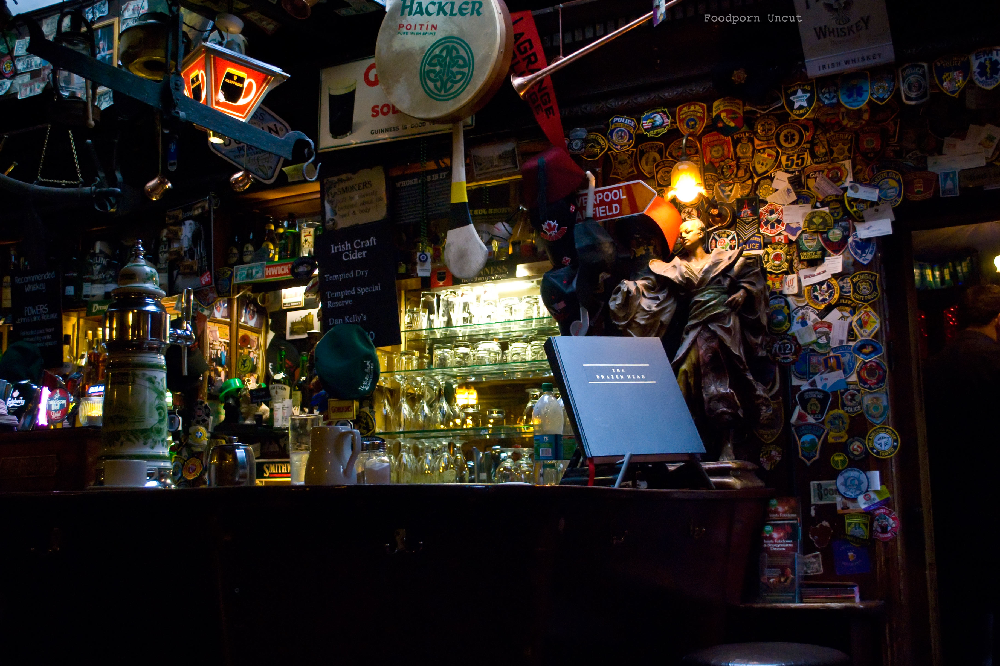
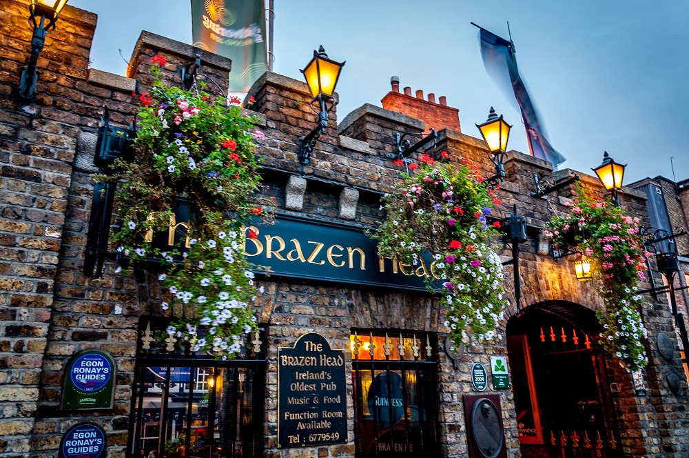
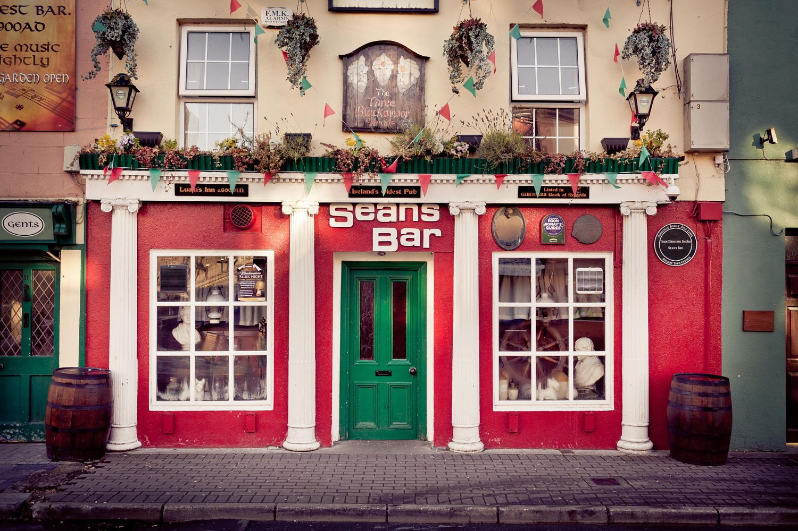

Каждый уважающий себя Ирландский мужчина должен построить дом, посадить дерево, вырастить сына и отвести его в паб. О культуре, истории и традициях Ирландских пабов, мы сегодня и поговорим.
Паб, или, как его называют британцы, the local, берёт свое название от сокращённого «public house». Они не были придуманы кельтами, первые прародители пабов, эльхаусы, появились на территории Великобритании и Ирландии с прибытием на эти земли римлян. Основной их функцией были выпивка и ночёвка. Хозяева эльхаусов рядом закрепляли зелёные ветки на столбах, это означало, что напитки готовы и эльхаус открыт для всех желающих постояльцев и прохожих.

В XVIII веке в пабах начали появляться дополнительные залы, где посетители могли играть музыку, танцевать и проводить спортивные состязания. К примеру, у некоторых пабов были свои клубы в саду, где стрелки могли посоревноваться в стрельбе по птицам. Позже пабы начали оснащать развлекательными играми: дартс, бильярд, кикер, карты. Во второй половине XX века начали показывать прямые трансляции футбола, регби, автогонок и конного спорта, что сильно повлияло на футбольную и околофутбольную культуру болельщиков, зародившуюся в Британии.
В традиционных ирландских пабах не едят. Ирландцы едят дома и очень любят именно домашнюю пищу, предпочитая её ресторанной. Ирландский паб — чтобы пить и веселиться, пить и ностальгировать. Максимум, что вы сможете заказать, — это закуски к выпивке. Сейчас во многих столичных пабах ситуация поменялась, владельцы стали более гибкими к посетителям и туристам предлагая завтраки, и обеды. Еда подаётся очень мужская и простая. Колканнон — это смесь из капусты, лука, картофеля, которая подаётся вместе с сосисками либо с беконом. Микст коддл — варёные сосиски с беконом.
Центральный элемент любого паба - это бармен. Хороший бармен должен не просто уметь наливать жидкости из бутылок в бокалы, но и разбираться в напитках, знать наизусть ингредиенты и пропорции основных коктейлей и смесей. Кроме того, хороший бармен знает, как поддержать беседу с посетителями, будь то веселая компания местных жителей или одинокий задумчивый незнакомец.

Если вы возьмете среднестатистический паб где-нибудь в ирландской глуши, который обслуживает людей не менее 50 лет, скорее всего, вы увидите стены, увешанные фотографиями из жизни поселения: вот первая футбольная команда посёлка, вот обретение независимости, вот прапрадед владельца с бочонками под новой вывеской. Паб обставлен только деревянной мебелью, окна отделаны матовым и дымчатым стеклом, чтобы свет и уличная суета не мешала посетителям. Интерьер украшают разноцветные стеклянные мозаики.
Официально самый старый паб в Дублине - The Brazen Head. Если вы хотите ощутить атмосферу старого доброго ирландского паба, не покидая столицы – вам именно сюда. Именно это озвучивается всем туристам. Однако самым старым Ирландским пабом считается Sean’s Bar, появление которого ознаменуется 900 годом нашей эры и расположен в самом сердце Ирландии на берегу реки Шэннон в точке пересечении Esker Riada, старой дорогой, которая обеспечивала путникам безопасный переход через болота в течении последних полутора тысяч лет.

Но вернемся к музыке, а точнее тем песням, которые Ирландцы исполняют в своих пабах. Чаще всего это композиции, рассказывающие о величии Ирландцев, о святом Патрике и ничтожестве Англичан. Ив 2004 году группа Cruachan, играющая в стиле фолк-панк, играет свою версию на народную «Some say the devil is dead» и тем самым стали одной из популярнейших групп Ирландии, играющий в данном стиле.
Кстати, если у вас есть свое видение на ирландскую музыку, то мы с огромным удовольствием хотели бы о нем знать. Просто Ради.О и легендарный ирландский виски Талламор Дью хотят отправить в Дублин именно тебя. Для этого, запиши кавер на песню любого ирландского исполнителя, сними это на видео, выложи его в ютьюб, а ссылку отправь на irishtrue.vgorode.ua и быть может именно ты выступишь с сольным концертом в Дублине.